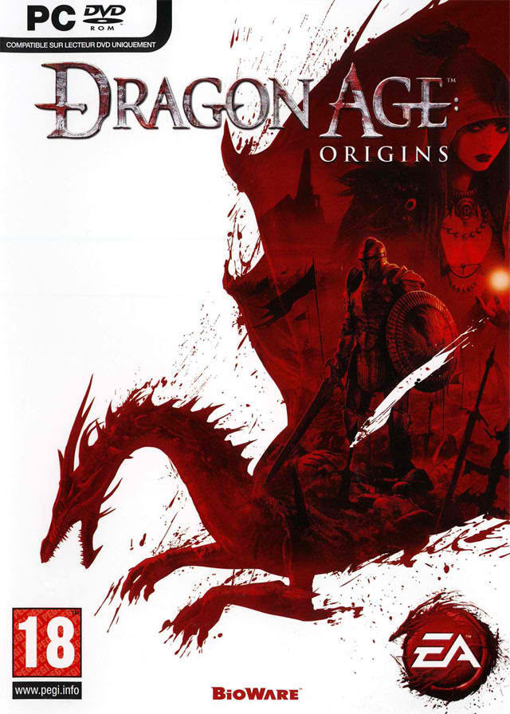

- Resident Evil 6

With Resident Evil 6, a once-mighty series makes another stumble. From a production standpoint, this atmospheric third-person shooter (this is no survival horror game, certainly) hits a number of high notes, weaving multiple stories into a single narrative that you untangle from different perspectives. It's unfortunate that actually interacting with Resident Evil 6 is an excruciating chore. This is a wannabe action film that resents your interference, and punishes you by forcing one horrible quick-time event after another upon you.
That Resident Evil...
- GTA 5

Trouble taps on your window again with this next chapter in the Grand Theft Auto universe, set in the city of...
- Need for Speed World
NFSW is an online street-racer in the same vein of other games in the Need for Speed series. When it's not about racing, it's about avoiding the long, wheeled arm of the law. The game purports to be massively multiplayer and open world, and in some sense...
- World of Warcraft: Mists of Pandaria

World of Warcraft® is an online role-playing experience set in the award-winning Warcraft universe. Players assume the roles of Warcraft heroes as they explore, adventure, and quest across a vast world. Being "Massively Multiplayer," World of Warcraft allows thousands of players to interact within the same world. Whether adventuring together or fighting against each other in epic battles, players will form friendships, forge alliances, and compete with enemies for power and glory.
The spellbinding world...
- Ran Online PH

RAN Online is campus-based MMORPG, which features schools (Mystic Peak, Sacred Gate and Phoenix) vying to become the best of the best. Players can choose to become the sword-wielding Swordsman, the melee fighter Brawler, the bow-brandishing Archer, and the Qi-Gong expert Shaman.
Previously, these job classes...
- Dragon Nest

Dragon Nest is a fantasy MMORPG with an emphasis on skill-based fighting and combos. Originally released in 2010 to the Korean market, Nexon brings Dragon Nest to the North American market just a year later with a fresh set of voice actors and a whole lot of hype. Dragon Nest lets you play one of four classes, each with their set of two sub-classes, as you quest your way through colorful anime-inspired environments. It will undoubtedly appeal to those who tire of the World of Warcraft UI model, along with those who enjoy a more fast paced, less repetitive fighting system.
Players will...
- Crossfire

Crossfire PH is a multiplayer game sthat allows the player to connect from all sides of the country there are different kinds of crossfire versions it depends on the country were it is being hosted.
It is an online...
- Adventure Quest Worlds
Considering it plays directly on your web browser with no need for special plugins or installations, Adventure Quest Worlds is an impressive MMORPG. Compared to Artix’s first hit AdventureQuest...
- Avatar

Avatar: The Game takes place on the same moon as its movie counterpart but rather than retelling Cameron's tale, it offers a prequel story and an introduction to Pandora's past. The reason for all of the commotion? Pandora is the only known place to harvest unobtanium, a mineral worth whatever it takes to get it. Unfortunately, Pandora has a toxic atmosphere and is the home to some hostile locals, including giant carnivorous plants and the Na'vi, an alien race that stands roughly 10 feet tall. The RDA, a military for hire, has countered with Avatars, a...
- Assassin's Creed 3
Assassin's Creed III is a 2012 action-adventure video game developed by Ubisoft Montreal and published by Ubisoft for PlayStation 3, Xbox 360, Wii U, and Microsoft Windows. It is the fifth major installment in the Assassin's Creed series, and a direct sequel to 2011's Assassin's Creed: Revelations. The game was released worldwide for PlayStation 3 and Xbox 360, beginning in North America on October 30, 2012, with a Wii U and Microsoft Windows release following in November 2012.
The plot is...
- Prototype 2
Prototype 2 is an open world action-adventure video game, released for consoles on April 24, 2012.
Developed by Canadian studio Radical Entertainment and published by Activision, it is the sequel to 2009's Prototype.
The game was announce...
- Defense of the Acients 2

Dota 2 is a so-called MOBA. MOBA stands for ‘multiplayer online battle arena’, a terrible catch-all term that describes all games ever. A better term would be ‘DotA-like’ – referencing the originator of the genre: Warcraft III’s Defence of the Ancients mod. In a world filling up with DotA-likes – League of Legends, Heroes of Newerth, SMITE, Bloodline Champions– Dota 2 is the most dotingly DotA-like.
Like DotA, Dota...
- Diablo 3

Diablo III is an action role-playing video game developed and published by Blizzard Entertainment. It is the third installment in the Diablo franchise that features elements of the dungeon crawl and hack and slash genres.
Diablo III was released in the Americas, Europe, South Korea, and Taiwan on May 15, 2012, and in Russia on June 7, 2012.[3] Diablo III set a new record for fastest-selling PC game by selling over 3.5 million copies in the first 24 hours of its release.[4] It was also the highest selling PC game of 2012, selling more than 12 million copies during the year.
It received...
- Dragon Age: Origins

Dragon Age: Origins is a third-person single-player role-playing video game developed by BioWare's Edmonton studio and published by Electronic Arts. It is the first game in the Dragon Age franchise.
The game was released for Microsoft Windows, PlayStation 3 and Xbox 360 on November 3, 2009, and for Mac OS X on December 21, 2009.
Set in the fictional kingdom...
- Elder Scrolls V: Skyrim

The province of Skyrim might be frigid, but the role-playing game that takes place within it burns with a fire few games possess. In The Elder Scrolls V: Skyrim, you take up arms against dragons, and your encounters with them are invariably exciting--yet depending on where your adventure takes you, such battles may not even represent the pinnacle of your experience. A side quest that starts as a momentary distraction may turn into a full-fledged tale that could form the entirety of a less ambitious game. Yes, Skyrim is another enormous fantasy RPG from a developer that specializes in them, and it could suck up hundreds of hours of your time as you inspect each nook and crevasse for the secrets to be found within. If you know Bethesda Softworks' previous games, you might be unsurprised that Skyrim is not a land without blemish, but rather harbors any number of technical glitches and frustrating idiosyncrasies that tear open the icy veil that blankets the land. Many of them are ones Elder Scrolls fans will probably see coming...
- Battlefield 3

It delivers scorching multiplayer, fitting of its decade-long pedigree of famously expansive big-team battles, but stumbles over a generic single-player campaign that feels like a different game.
While DICE...
- Call of Duty: Black Ops 2

Call of Duty: Black Ops II is a first-person shooter video game, developed by Treyarch and published by Activision (Square Enix for Japan). It was released on November 13, 2012 for PlayStation 3, Xbox 360, and Microsoft Windows and on November 18, 2012 in North America, November 30, 2012 in Europe and Australia for the Wii U.[4][5][6] Square-Enix released the game for the Japanese market on November 22, 2012 as a subbed version.
A Japanese...
- Mass Effect 3

Mass Effect 3 is an action role-playing game developed by BioWare and published by Electronic Arts for Microsoft Windows, Xbox 360, PlayStation 3, and Wii U.
Officially announced on December 11, 2010,[11][12] the game was released March 6, 2012[13] and marks the final chapter in the Mass Effect trilogy of video games, completing the story of Commander Shepard.
A Wii U version...
- SIMS 3

When adapting a big game to a handheld system, how much can be stripped away before the game loses its identity? The Sims 3 on the 3DS tries valiantly to retain the series' absorbing life management, serving up some of the easygoing dollhouse joy that Sims addicts have come to crave. Yet while the...
- NBA 2K13

With more than 5 million copies sold worldwide and more than 25 Sports Game of the Year awards won, NBA 2K12 was another monster release for the biggest NBA video game simulation franchise in the world. This year, 2K Sports has joined forces with the legendary JAY Z as
...